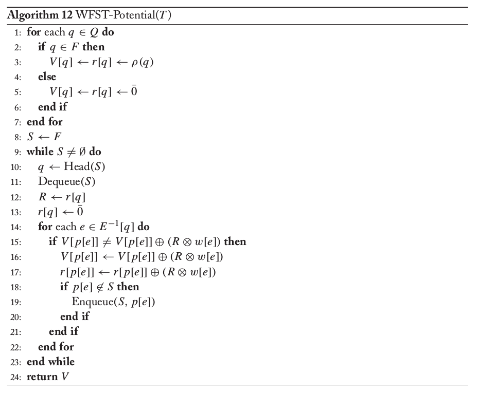
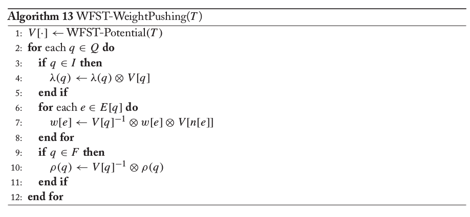
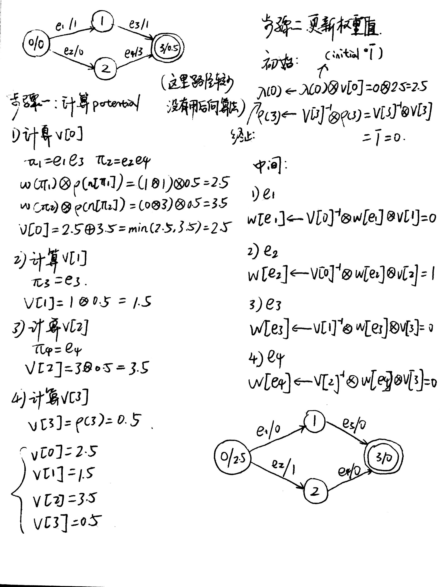

WFST详解#6
Weight-Pushing
本文是WFST系列文章的其中一篇，想要了解更多可以点击这个系列的目录，欢迎您的到来～
定义
Weight-Pushing顾名思义，就是把权重值往前压。将权重值往前压之后，原本的每一条路径的总权重并不会发生改变。为什么需要这样的操作呢？在自动机或者转化机相关的问题中，目标常常是在图中寻找最大化权值或者最小化权值的路径。将权重往前压的好处就是可以提高寻找路线的速度。在寻找路线的前期，我们就已经能够获得一个大致的权值的顺序。我们可以根据这一个顺序抛弃一些明显不符合的路径。这对于我们寻找路径的效率有了很大的改善。
算法
我们可以将整一个Weight-Pushing算法大致等价为两个步骤。第一个步骤是为每一个状态计算一个potential值，第二个步骤是根据每一个状态的potential值进行对权值的更新。
严格算法如下，步骤一：

上面是步骤一的算法，即计算每一个状态的potential的值。算法的核心是计算一个状态到最后的最短距离（以tropical semiring为例）。问题就转化成了最短距离的问题。
算法的核心如下，含义是计算所有路径当中通过得到的值（常见是最短距离）:
当遇到无法计算的情况时（比方说有无限条路线），我们使用k-closed。选择一部分的路线:
- 1-6行的代码是对每一个状态的potential值进行初始化。最后的状态设置为，而其他的状态值则先设置为。
- 我们讲最后的状态先放入队列当中。之后就进入一个循环。每次循环从队列里面拿一个状态出来。
- 使用后向算法，从后往前进行计算。如果我们需要进行最短路径的计算（以tropical semiring为例子），我们每一个循环都可以计算一个r值来存储当前状态的到最后状态的最短路径。这样做可以大大减少计算量。
- 伪代码中的第15行的比较，可以使用k-closed的方法。我们可以规定，当两者之差小于一个值的时候，将两者看作是相等的。这样可以减少很多计算量。
步骤二：

这一个步骤比较简单。我们分三种情况更新状态。更新状态依据的是之前计算的potential值和原始的权值：
- 开始状态的权重
- 中间状态的弧的权重
- 结束状态的权重
具体的公式看上面的伪代码，非常清晰。
举例
下面是一个Weight-Pushing的手推例子，可以参考。

上面推导的方法与算法上的有一点点出入，但是原理还是一样的。